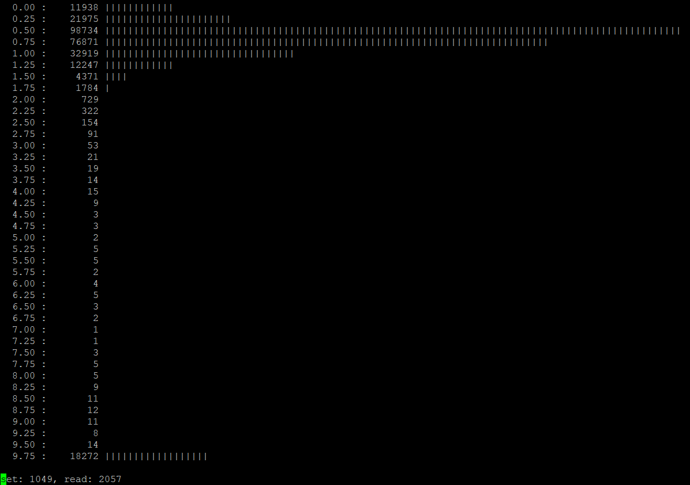

kernel态的pgheat.ko提供了/proc/pgheat接口，能够通过各种命令操作指定进程，现在就要写一个用户态的工具，以演示pgheat.ko的使用。
首先，把pgheat.ko的交互接口整合成一个头文件pgheat.h：
#ifndef PGHEAT_H
#define PGHEAT_H
#include "common.h"
#define PGHEAT_MODULE_PATH "/proc/pgheat"
#define PGHEAT_CMD_INIT_HOOK 1200
#define PGHEAT_CMD_SET_COOLING_TIME 1201
#define PGHEAT_CMD_DETECT_PAGES 1202
#define PGHEAT_CMD_SET_LANDMINES 1203
#define PGHEAT_CMD_READ_EVENTS 1204
#define PGHEAT_CMD_STAT 1205
#define PGHEAT_CMD_GET_VMAS 1206
#define PGHEAT_CMD_GET_TIME 1207
#define PGHEAT_CMD_DEINIT_HOOK 1208
#define PGHEAT_EVENT_TYPE_SET 0
#define PGHEAT_EVENT_TYPE_TRIGGERED_BY_READ 1
#define PGHEAT_EVENT_TYPE_TRIGGERED_BY_WRITE 2
#define PGHEAT_EVENT_TYPE_TRIGGERED_BY_EXEC 3
// the event of a triggered landmine
struct pgheat_event
{
uint64_t timestamp : 62; // time when this event happened (CPU ticks)
uint64_t type : 2; // what the event is
unsigned long address; // virtual address where it happened
};
// parameter of command PGHEAT_CMD_SET_LANDMINES
struct pgheat_param_set_landmines
{
size_t count; // the count of pages to set landmiens
size_t* set_count; // where to put the count of successfully set landmines (can be null)
};
// parameter of command PGHEAT_CMD_READ_EVENTS
struct pgheat_param_read_events
{
struct pgheat_event* buffer; // user buffer
size_t capacity; // the capacity of user buffer
size_t* count; // where to put the count of successfully read events (can be null)
};
// parameter of command PGHEAT_CMD_STAT
struct pgheat_param_stat
{
int reset_triggered_count; // whether to reset triggered counter
size_t* triggered_count; // where to put the triggered count (can be null)
size_t* alternative_count; // where to put the alternative count (can be null)
size_t* page_count; // where to put the count of friendly pages (can be null)
size_t* event_queue_length; // where to put the length of event queue (can be null)
};
// parameter of command PGHEAT_CMD_GET_VMAS
struct pgheat_param_get_vmas
{
struct pgheat_vma // a snapshot of VMA (virtual memory area)
{
unsigned long start; // the starting address
unsigned long end; // the ending address
}*
buffer;
size_t capacity; // the capacity of the buffer
size_t* length; // where to put the count of VMAs (this value is always the count of
// VMAs in the process, may larger than 'capacity')
};
#endif
我们还需要《页热度监控工具pgheat（三）——高内聚稀疏数组vmarray》里的common.h、vmarray.h和vmarray.c。
main.c：
#include "common.h"
#include "pgheat.h"
#include "vmarray.h"
#include <time.h>
#include <fcntl.h>
#include <float.h>
#include <stdlib.h>
#include <unistd.h>
#include <sys/ioctl.h>
#define PAGE_SIZE 4096
#define MAX_VPFN ((size_t)1 << 36)
#define COOLING_TIME 5000 // cooling time (ms)
#define SET_LANDMINE_RATIO 0.005f // set_count = RATIO * page_count
#define LOOP_INTERVAL 100000 // interval (us) to set landmines
#define SHOW_INTERVAL 5 // interval (sec) to show results
#define EXP_AVG_WEIGHT 0.15f // the weight of new interval
#define MAX_LINES 256 // the max lines to show results
#define MAX_VMAS 1024 // the max VMAs
#define ENOUGH_SAMPLE_COUNT 3 // average is valid if count is enough
#define LONG_INTERVAL_THRESHOLD 1000000
struct page_info
{
uint64_t set_time; // when a landmine is set to this page
float interval; // the average interval from setting to triggering
uint32_t count; // how many samples
};
static void* alloc_zeroed_page_for_vmarray(void* privdata)
{
return malloc(PAGE_SIZE);
}
static void free_page_for_vmarray(void* page, void* privdata)
{
free(page);
}
static int init_pgheat(pid_t pid)
{
int ret;
if((ret = open(PGHEAT_MODULE_PATH, O_RDWR)) < 0)
ERROR1(ret, "open('%s', O_RDWR) failed", PGHEAT_MODULE_PATH);
int fd = ret;
if((ret = ioctl(fd, PGHEAT_CMD_INIT_HOOK, pid)) < 0)
{
close(fd);
ERROR2(ret, "ioctl(%d, PGHEAT_CMD_INIT_HOOK, %d) failed", fd, pid);
}
if((ret = ioctl(fd, PGHEAT_CMD_SET_COOLING_TIME, COOLING_TIME)) < 0)
{
close(fd);
ERROR2(ret, "ioctl(%d, PGHEAT_CMD_SET_COOLING_TIME, %u) failed", fd, COOLING_TIME);
}
if((ret = ioctl(fd, PGHEAT_CMD_DETECT_PAGES, NULL)) < 0)
{
close(fd);
ERROR1(ret, "ioctl(%d, PGHEAT_CMD_DETECT_PAGES, NULL) failed", fd);
}
return fd;
}
static ssize_t set_landmines(int fd, float ratio)
{
size_t alt_count;
struct pgheat_param_stat param_stat =
{
.reset_triggered_count = 1,
.triggered_count = NULL,
.alternative_count = &alt_count,
.page_count = NULL,
.event_queue_length = NULL,
};
int ret;
if((ret = ioctl(fd, PGHEAT_CMD_STAT, ¶m_stat)) < 0)
ERROR1(ret, "ioctl(%d, PGHEAT_CMD_STAT, ...) failed", fd);
size_t set_count;
struct pgheat_param_set_landmines param_set =
{
.count = (size_t)(alt_count * ratio),
.set_count = &set_count,
};
if((ret = ioctl(fd, PGHEAT_CMD_SET_LANDMINES, ¶m_set)) < 0)
ERROR1(ret, "ioctl(%d, PGHEAT_CMD_SET_LANDMINES, ...) failed", fd);
return set_count;
}
static void update_page(struct page_info* info, struct pgheat_event* event)
{
if(event->type == PGHEAT_EVENT_TYPE_SET)
info->set_time = event->timestamp;
else
{
assert(info->set_time);
assert(event->timestamp >= info->set_time);
uint64_t interval = event->timestamp - info->set_time;
info->set_time = 0;
info->interval = info->interval * (1 - EXP_AVG_WEIGHT) + interval * EXP_AVG_WEIGHT;
if(info->count < UINT32_MAX)
info->count++;
}
}
static ssize_t handle_events(int fd, struct vmarray* pages)
{
struct pgheat_event events[256];
size_t read_count, handled_count = 0;
struct pgheat_param_read_events param_read =
{
.buffer = events,
.capacity = 256,
.count = &read_count,
};
do
{
int ret;
if((ret = ioctl(fd, PGHEAT_CMD_READ_EVENTS, ¶m_read)))
ERROR1(ret, "ioctl(%d, PGHEAT_CMD_READ_EVENTS, ...) failed", fd);
size_t i;
for(i = 0; i < read_count; i++)
{
struct pgheat_event* event = events + i;
unsigned long vpfn = event->address / PAGE_SIZE;
struct page_info* info = vmarray_access(pages, vpfn, 1);
if(!info)
ERROR1(-ENOMEM, "vmarray_access(pages, %lx, 1) failed", vpfn);
update_page(info, event);
}
handled_count += read_count;
}
while(read_count == param_read.capacity);
return handled_count;
}
static int show_distribution(int fd, struct vmarray* pages,
float min_hz, float max_hz, unsigned columns, unsigned lines)
{
if(min_hz >= max_hz)
ERROR2(-EINVAL, "param <min_hz = %f> is not less than <max_hz = %f>", min_hz, max_hz);
float hz_range = max_hz - min_hz;
if(lines > MAX_LINES)
ERROR1(-EINVAL, "param <lines = %u> is too large", lines);
size_t hz_counts[MAX_LINES] = {0};
int ret, i, j;
uint64_t current_time;
if((ret = ioctl(fd, PGHEAT_CMD_GET_TIME, ¤t_time)) < 0)
ERROR1(ret, "ioctl(%d, PGHEAT_CMD_GET_TIME, ...) failed", fd);
size_t vma_count;
struct pgheat_vma vmas[MAX_VMAS];
struct pgheat_param_get_vmas get_vmas =
{
.buffer = vmas,
.capacity = MAX_VMAS,
.length = &vma_count,
};
if((ret = ioctl(fd, PGHEAT_CMD_GET_VMAS, &get_vmas)) < 0)
ERROR1(ret, "ioctl(%d, PGHEAT_CMD_GET_VMAS, &get_vmas) failed", fd);
if(vma_count == MAX_VMAS)
ERROR1(-EINVAL, "<vma_count = %lu> is too large", vma_count);
for(i = 0; i < vma_count; i++)
{
unsigned long vaddr;
for(vaddr = vmas[i].start; vaddr < vmas[i].end; vaddr += PAGE_SIZE)
{
struct page_info* info = vmarray_access(pages, vaddr / PAGE_SIZE, 0);
if(!info)
continue;
float interval;
if(info->count < ENOUGH_SAMPLE_COUNT)
interval = FLT_MAX;
else if(info->set_time && info->set_time + LONG_INTERVAL_THRESHOLD < current_time)
{
struct page_info copy_info = (*info);
struct pgheat_event event =
{
.timestamp = current_time,
.type = PGHEAT_EVENT_TYPE_TRIGGERED_BY_WRITE,
.address = vaddr,
};
update_page(©_info, &event);
interval = copy_info.interval;
}
else
interval = info->interval;
float hz = 500000 / interval;
int index = (hz - min_hz) / hz_range * lines;
if(index >= lines)
index = lines - 1;
else if(index < 0)
index = 0;
hz_counts[index]++;
}
}
size_t max_count = 1;
for(i = 0; i < lines; i++)
if(hz_counts[i] > max_count)
max_count = hz_counts[i];
for(i = 0; i < lines; i++)
{
float hz_floor = hz_range * i / lines;
printf("%6.2f : %8lu ", hz_floor, hz_counts[i]);
for(j = columns * hz_counts[i] / max_count; j > 0; j--)
fputc('|', stdout);
fputc('\n', stdout);
}
fputc('\n', stdout);
return 0;
}
int main(int argc, char* argv[])
{
pid_t pid;
float min_hz, max_hz;
unsigned columns, lines, interval;
if(argc != 7 ||
sscanf(argv[1], "%d", &pid) != 1 ||
sscanf(argv[2], "%f", &min_hz) != 1 ||
sscanf(argv[3], "%f", &max_hz) != 1 ||
sscanf(argv[4], "%u", &columns) != 1 ||
sscanf(argv[5], "%u", &lines) != 1 ||
sscanf(argv[6], "%u", &interval) != 1)
{
printf("USAGE: %s <pid> <min_hz> <max_hz> <columns> <lines> <interval>\n", argv[0]);
return -EINVAL;
}
int ret;
struct vmarray pages;
if((ret = vmarray_init(&pages, MAX_VPFN, sizeof(struct page_info), PAGE_SIZE,
alloc_zeroed_page_for_vmarray, free_page_for_vmarray, NULL)) < 0)
ERROR0(ret, "vmarray_init(&pages, ...) failed");
int fd = init_pgheat(pid);
if(fd < 0)
{
vmarray_deinit(&pages, NULL);
ERROR1(fd, "init_pgheat(%d) failed", pid);
}
time_t time_base = 0;
while(1)
{
ssize_t landmine_count, event_count;
if((landmine_count = set_landmines(fd, SET_LANDMINE_RATIO)) < 0)
{
close(fd);
vmarray_deinit(&pages, NULL);
ERROR2((int)landmine_count, "set_landmines(%d, %f) failed", fd, SET_LANDMINE_RATIO);
}
if((event_count = handle_events(fd, &pages)) < 0)
{
close(fd);
vmarray_deinit(&pages, NULL);
ERROR1((int)event_count, "handle_events(%d, &pages) failed", fd);
}
printf("set: %lu, read: %lu\r", landmine_count, event_count);
fflush(stdout);
time_t current_time = time(NULL);
if(current_time - time_base >= SHOW_INTERVAL)
{
if((ret = show_distribution(fd, &pages, min_hz, max_hz, columns, lines)) < 0)
{
close(fd);
vmarray_deinit(&pages, NULL);
ERROR1(ret, "show_distribution(%d, ...) failed", fd);
}
time_base = current_time;
}
usleep(LOOP_INTERVAL);
}
return 0;
}
然后编译：
gcc *.c -o pgheat
得到可执行文件pgheat。
==============================DEMO=================================
就以Redis为例。首先启动redis-server：
src/redis-server --protected-mode no
然后启动redis-benchmark：
src/redis-benchmark -t set -r 1000000 -n 1000000 -d 1000 -P 32 -q -l
假设redis-server的PID是1234，那么启动pgheat：
./pgheat 1234 0 10 100 40 5
第一个参数是pid，第二个参数是显示的最小频率，第三个参数是显示的最大频率，第四个参数是柱状图最大宽度（列数），第五个参数是柱状图的行数，第六个参数是刷新间隔。
pgheat工作了几分钟后，会显示出这样的图像：

比如第一行的含义就是，频率介于[0, 0.25) Hz的页有11938个。